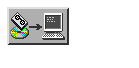

Click the Tool Box icon, then click the General Toolbox icon. This opens a window containing several icons. Double click the  Update Filesets icon, which starts a program. This program is mainly a character-mode program. Many of its functions do not respond to mouse clicks. Instead you must use the cursor keys and the Enter key.
From the main window select the Change Source or Destination option.
Type the path name in the source field and click the Done button.
Now, highlight Select All Filesets on the Source Media and press the Enter key.
Now you will see a window asking if you want to start loading now. Press the Enter key to confirm. Ignore the warning that this may take several hours to complete... it won't!
You will see another window asking you to confirm your choice. Type y and press the Enter key.
Now you will see progress messages in a window. The installation should only take a few moments. Finally, you will see a completion message. Press the Enter key to clear this message.